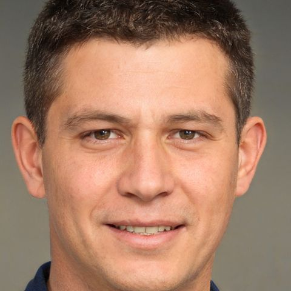
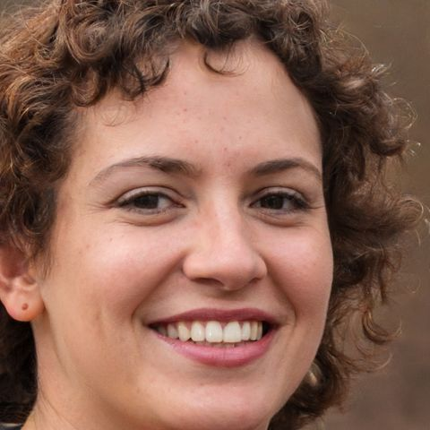

מדגם אל־ערב
מחקר בחברה הערבית בישראל, שנבנה בערבית מהיום הראשון ולא מתורגם בסוף.
- שאלונים בערבית וסוקרים דוברי ערבית
- מדגם שבנוי למבנה היישובים והאוכלוסייה
- גם במגזר החרדי ובקרב דוברי רוסית
בהובלת איהאב קדאח
מדגם מתכננת ומבצעת מחקרים כמותיים ואיכותניים: מהשאלה שעל השולחן, דרך הדגימה והאיסוף, ועד ממצא שאפשר לקבל לפיו החלטה.
ייעוץ ומחקר בע״מ
כל מחקר נבנה על מדגם שמייצג את האוכלוסייה שעליה הוא מדבר, ועובר אצלנו את כל הדרך עם אותו צוות.
מתחילים מהשאלה שאתם צריכים לענות עליה, ורק אחר כך בוחרים שיטה. אלה השאלות שמגיעות אלינו הכי הרבה.
סקר דעת קהל מייצג, ארצי או מקומי, עם ממצאים לפי קהלים.
סקרי דעת קהלפילוח שוק וקהלי יעד, כדי לדעת למי לפנות ובאיזה מסר.
פילוח ומחקר שוקמדידת מודעות, תדמית ואפקטיביות, לפני ההשקה ואחריה.
מותג ופרסוםשביעות רצון וחוויית לקוח, במדידה חוזרת שמראה מגמה.
שביעות רצוןבדיקת קונספט, מוצר ומחיר מול הקהל, לפני שמשקיעים.
בדיקת מוצר ומחירחוות דעת מומחה: ביקורת על סקר שהוגש, או מחקר חדש לבחינת טענה.
חוות דעת מומחהכל פרויקט משלב את מה שהשאלה צריכה: מספרים, הסברים, שיטת איסוף שמגיעה לקהל, וכלים שמנתחים מהר.
סקרים מייצגים, שקלול וניתוח סטטיסטי, בהיקף של מאות עד אלפי משיבים.
קבוצות מיקוד וראיונות עומק שמסבירים את הסיבות שמאחורי המספרים.
כל שיטה לחוד, או שילוב שמגיע לכל הקהל.
ניתוח תשובות פתוחות וזיהוי דפוסים בהיקפים גדולים, תמיד עם בקרה של חוקר.
מחקר בקרב מטופלים, אנשי מקצוע וקובעי מדיניות.
סקרי דעת קהל ובחירות, ברמה הארצית וברשויות.
מחקר בקרב הורים, צוותי הוראה ותלמידים.
סקרים לפרסום בתקשורת ומחקר קהלים.
מחקר בחברה הערבית בישראל, שנבנה בערבית מהיום הראשון ולא מתורגם בסוף.
בהובלת איהאב קדאח
סקרים שמשמשים ראיה, בשיטה שעומדת גם בחקירה נגדית.
בהובלת ד״ר מינה צמח, שחותמת על כל חוות דעת
ראש מכון מדגם
מלווה כל מחקר מהשאלה הראשונה ועד האישור הסופי.
חוות דעת מומחה
מובילה את עבודת חוות הדעת לבתי משפט וחותמת על כל אחת מהן.

מדגם אל־ערב
מוביל את המחקר בחברה הערבית, משלב השאלון ועד האיסוף.

מחקר איכותני
מובילה קבוצות מיקוד וראיונות עומק.
ספרו לנו מה אתם רוצים לדעת. נחזור אליכם עם הצעה: שאלון, מדגם, שיטה ולוח זמנים.